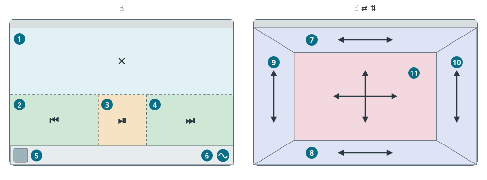

Manuel de wDSP
Tout le contenu de l'application, l'ordre précis de réglage, ce qui est mesuré et pourquoi. Rédigé pour le conducteur, non pour le programmeur.
À propos de l'application
Dans les autoradios QF, la sortie audio d'Android transite par un processeur de son dédié ROHM BU32107. wDSP le pilote via le MCU de l'autoradio : égaliseur, filtres des haut-parleurs de portière, caisson de basses, retards et fader. L'application DSP d'origine contrôle le même circuit, mais avec des fonctions nettement plus restreintes.
Il est essentiel de mesurer d'emblée ce que le processeur autorise et ce qu'il ne permet pas :
- un égaliseur unique partagé par tous les haut-parleurs : 16 bandes de 20 Hz à 20 kHz, pas de 2 dB, limites de ±12 dB, facteur Q fixe ;
- aucun égaliseur indépendant pour les voies gauche et droite ;
- le subwoofer dispose d'un filtre passe-bas, d'un gain et d'un retard propres ; les portières disposent d'un filtre passe-haut et d'un renfort de graves.
Ainsi, la mesure acoustique de l'habitacle recherche en premier lieu les défauts : câbles inversés, haut-parleurs en opposition de phase, canaux déséquilibrés et résonances de portière. L'égaliseur applique des corrections douces et larges. Une courbe parfaitement plate au décibel près n'existe pas sur ce matériel, et l'application ne la promet pas.
Premier démarrage
Au premier lancement, l'application présente l'assistant d'autorisations. Activez chaque autorisation à l'aide du bouton dédié :
- Microphone — mesure acoustique et affichage du spectre en direct en mode microphone ;
- Afficher sur d'autres applications — widget dans la barre d'état et économiseur plein écran ;
- Accès aux notifications — lecture des titres et pochettes d'albums ;
- Localisation / GPS — pour GALA (compensation du volume selon la vitesse) ;
- Activité en arrière-plan — empêche Android d'interrompre le service gérant le processeur.
L'accès root (Magisk) est facultatif. S'il est présent, l'application réassigne automatiquement le microphone monopolisé par les assistants vocaux avant les mesures.
Séquence de configuration
L'ordre des opérations est déterminant : chaque étape s'appuie sur la précédente. Effectuez toutes les étapes avec micro dans le véhicule : vitres et portières closes, moteur éteint, silence complet.
Décrivez votre véhicule
Paramètres de wDSP → Cabin Acoustic Calibration & Auto-Presets. Vous définissez ici les bases d'analyse des balayages :
- Habitacle : Fermé (voiture) ou Ouvert (banc d'essai, cabriolet). Un espace clos amplifie naturellement les extrêmes graves (gain d'habitacle), ce dont le modèle tient compte ;
- longueur, largeur et hauteur ;
- Emplacement du micro et Environnement de la capsule : influe sur la correction des aigus ;
- présence d'un caisson et Emplacement du subwoofer.
Étalonnez le microphone
Appuyez sur Calibrate Microphone. Le micro de l'autoradio n'est pas un équipement de laboratoire : ses performances dans les extrêmes graves et aigus diffèrent de l'oreille humaine. L'étalonnage compense sa courbe afin de ne pas imputer ses irrégularités à l'acoustique du véhicule.
Déroulement de cette minute d'étalonnage :
- ajustement du volume — bref signal sonore sur tous les haut-parleurs pour s'adapter à la sensibilité du micro ;
- sweeps — balayages sinusoïdaux fluides du grave à l'aigu par chaque haut-parleur et le caisson tour à tour ;
- paliers de volume — environ 20 s d'un son atténué pendant que le volume descend automatiquement de 32 à 1. L'application détermine ainsi l'atténuation exacte en décibels de chaque palier de votre autoradio.
Cette opération s'effectue une seule fois. À renouveler uniquement si le micro est déplacé ou l'amplificateur remplacé.
Mesurez l'habitacle et générez le préréglage
Appuyez sur Calibrate Cabin & Create Preset. L'assistant demande quatre éléments :
- Subwoofer Configuration — présence ou non d'un caisson ;
- Courbe cible : Harman (référence automobile chaleureuse), Dolby Atmos, Club / Bass Heavy, Vocal / Podcast ou Studio Flat ;
- Focalisation de la scène — Conducteur, Centre avant, Centre habitacle ou Sans délai ;
- Distance du micro aux oreilles.
Avant la mesure, réglez votre volume d'écoute habituel : la correction Loudness du nouveau préréglage s'y ajustera. L'application gère son propre volume de mesure. Le processus enchaîne :
- sélection du volume, environ 4 s : silence, puis bitonalité 80 Hz + 1 kHz. Choix d'un palier entre 6 et 18 assurant des graves audibles sans saturation. Les bruits ambiants n'arrêtent pas le test : ils sont consignés dans le rapport ;
- enregistrement du bruit de fond ;
- balayages individuels par haut-parleur ;
- calcul des retards d'alignement temporel ;
- synthèse du préréglage ;
- balayage de contrôle — ensemble des haut-parleurs diffusant à travers le préréglage calculé. Permet de vérifier la bonne sommation en phase entre le caisson et les portières à la coupure.
Consultez le bilan et appliquez
L'écran Calibration Results & Auto-EQ synthétise les propriétés acoustiques constatées :
- Constats de mesure — inventaire des défauts avec degré de certitude (Certain, Probable, Possible) et recommandations ;
- fréquence de coupure — point de transition entre les portières et le subwoofer ;
- retards calculés par canal ;
- courbe de correction de l'égaliseur.
Boutons inférieurs :
- Apply Auto-EQ — enregistre et applique le nouveau profil ;
- Enregistrer l'archive — sauvegarde le fichier pour partage ;
- Fermer — quitter sans appliquer les modifications.
Le conseil d'inverser la phase du caisson (sélecteur 0/180 ou inversion de polarité) n'apparaît que si le balayage de contrôle a démontré une annulation de phase réelle.
Affinez la compensation de Loudness
Ouvrez l'onglet Loudness. L'ouïe perçoit moins les graves à bas niveau sonore. Le Loudness renforce les basses fréquences au fur et à mesure que vous baissez le volume.
- Point d'étalonnage — volume au-delà duquel le Loudness cesse toute accentuation. Pour les profils mesurés, il s'aligne sur le niveau d'écoute de départ. S'il était inférieur au niveau du test, l'application le fixe 18 dB au-dessus du niveau d'écoute, entre les paliers 16 et 24 ;
- Intensité de correction — ampleur de l'accentuation des basses.
L'application s'appuie sur les décibels réels relevés à l'étape 2 et non sur des numéros de palier abstraits. Le vérificateur intégré au bas de l'écran signale toute incohérence : le bouton Régler correctement corrige immédiatement les paramètres.
Capturez le zéro RTA
Ouvrez Test Audio → Bruit rose → Zéro RTA. Cela assigne à l'analyseur en temps réel une ligne de repère fixe plutôt qu'une moyenne oscillante.
Un seul appui synchronise les deux repères zéro, Musique et Microphone. L'application applique brièvement le volume ayant servi à l'étalonnage du micro, puis rétablit le niveau antérieur. Le zéro micro est ancré à ce palier et ne dérive plus lors des variations de volume.
Synchronisez le visualiseur avec la musique
Paramètres de wDSP → Synchronisation audio → Synchroniser. L'application calcule le décalage de la chaîne audio vis-à-vis de l'affichage de votre matériel. Les barres réagiront en cadence exacte sur le rythme.
Ce qui est étalonné et pourquoi
L'application propose cinq procédures d'étalonnage distinctes aux rôles bien différenciés :
| Élément | Emplacement | Données acquises | Fonction impactée | Quand renouveler |
|---|---|---|---|---|
| Microphone | Paramètres → Calibrate Microphone | Sensibilité du micro intégré dans les graves et aigus | Mesure habitacle, spectre Microphone | Changement de micro ou de support |
| Paliers de volume | Automatique lors du calibrage micro | Atténuation en dB par palier 1…32 du poste et de l'ampli | Loudness, graduation RTA micro | Toujours conjointement au micro |
| Habitacle | Paramètres → Cabin Acoustic Calibration | Anomalies, retards, coupure et préréglage Auto-EQ | Nouveau profil acoustique | Changement de haut-parleurs, caisson, isolation |
| Zéro RTA | Test Audio → Bruit rose → Zéro RTA | Ligne de référence stable de la courbe | Affichage du spectre uniquement | Après étalonnage micro ; sans effet sur le son |
| Synchronisation audio | Paramètres → Synchronisation audio | Décalage du flux audio par rapport à l'écran | Affichage widget et économiseur | Après mise à jour micrologicielle ou audio |
Le point de Loudness est un choix de paramétrage et non une mesure automatique : il est défini par l'assistant ou configuré manuellement.
Onglets de l'écran principal
- Égaliseur
- 16 bandes, sélection du préréglage au sommet et module Subwoofer : fréquence de coupure et gain. Chaque curseur ajuste le niveau en dB au centre de bande. Les bandes voisines fusionnent harmonieusement : trois curseurs à +4 dessinent un plateau régulier de +4 sans bosse disgracieuse. La courbe trace la commande réelle transmise au processeur DSP.
- Loudness
- Compensation physiologique (Loudness), seuil de référence et intensité. Compensation subwoofer étend l'effet au canal de basses. Atténuer les aigus adoucit les fortes brillances à volume élevé. Ultra Bass apporte un supplément de sous-graves sous un seuil paramétrable. Le graphique illustre la courbe dynamique effective.
- Retards
- Alignement temporel canal par canal en millisecondes et centimètres pour une arrivée simultanée du son aux oreilles. Calculé automatiquement lors de la mesure d'habitacle. Les boutons Avant groupé / Arrière groupé déplacent les paires en préservant leurs écarts. Comprend également le son spatial et le Rear-Fill.
- Autres
- Filtrage des portières : le Filtre passe-haut épargne aux portières les fréquences trop basses pour les rediriger vers le caisson ; le Renfort accentue la fréquence choisie. Réglages avant et arrière indépendants ; Identique à l'avant réplique les paramètres. Inclut fader et balance.
- GALA
- Augmentation progressive du volume selon la vitesse via GPS pour masquer les bruits de roulement. Pas de vitesse, seuil de déclenchement et gain plafond. Se suspend automatiquement pendant les appels téléphoniques.
- Test Audio
- Outils de validation auditive : pistes séparées (basse, voix, batterie, mélodie) combinables à volonté, bruit rose calibré, générateur sinusoïdal, sweep, contrôle individuel par haut-parleur et mode Subwoofer seul. Tous les signaux transitent par le préréglage actif sans écraser vos réglages.
Spectre et RTA
Le sélecteur Spectre au-dessus de l'égaliseur dispose de trois positions. Les paramètres permettent de choisir entre barres et tracé dynamique continu.
- Désactivé
- Aucun affichage du spectre sur l'écran principal. Le widget de la barre d'état et l'économiseur d'écran demeurent actifs.
- Musique
- Le flux musical façonné par le préréglage en vigueur : le rendu théorique attendu. Ne varie pas avec le volume.
- Microphone
- La restitution effective dans l'habitacle captée par le micro, selon la même échelle que Musique. Les divergences visualisent les résonances et réflexions du véhicule.
La radio FM analogique contournant la chaîne audio Android, elle n'affiche aucun spectre en mode Musique ; le mode Microphone fonctionne quant à lui avec la radio.
Préréglages et automatisation
- Gestion des préréglages sur l'écran principal : création, renommage, suppression, exportation et importation.
- Automatisation des préréglages associe des profils à des applications : la radio utilise son propre profil, le streaming Bluetooth le sien. Un profil est assigné aux Appels téléphoniques. Général par défaut s'applique pour le reste.
- Le volume est mémorisé de façon autonome par source audio.
- Sauvegarde intégrale et Restaurer les paramètres : archive globale avec préréglages ou sauvegarde isolée des paramètres.
- Reprendre la lecture après le redémarrage et Reprendre la lecture après la veille : le lecteur actif reprend de lui-même sans faire surgir sa fenêtre devant la navigation. La radio se relance seule. Pour la veille, appuyez sur Garder wDSP actif en veille et cochez wDSP dans la liste.
Widget et économiseur d'écran
Visualiseur de barre d'état — mini-spectre intégré dans la barre Android : largeur, décalage, hauteur, styles (barres classiques, Outrun, vumètre, oscilloscope) et palettes graphiques.
Économiseur d'écran — affichage plein écran lors des périodes d'inactivité : délai, profils de luminosité Jour/Nuit, liste d'exclusion d'applications. La navigation définie dans le poste n'est jamais masquée. Recouvrir la barre d'état choisit d'occulter ou non la barre. Ses zones de contrôle figurent sur le schéma ci-après.

Zones tactiles de l'économiseur
Appuis (schéma de gauche) :
- 1 — moitié supérieure : fermer l'économiseur ;
- 2 — moitié inférieure, tiers gauche (jusqu'au bord) : piste précédente ;
- 3 — zone centrale : pause / lecture ;
- 4 — tiers droit (jusqu'au bord) : piste suivante ;
- 5 — pochette / icône du lecteur (en bas à gauche) : ouvrir le lecteur ou la radio active ;
- 6 — bouton de style (en bas à droite) : changer de style visuel ; maintenir 1 s ouvre l'égaliseur wDSP.
Glissements (schéma de droite) — la commande dépend du bord où le doigt amorce le mouvement. Glissement possible dans toutes les directions ; vers le haut ou la droite pour augmenter la valeur. Le paramètre s'enregistre au relâchement :
- 7 — depuis le bord supérieur : assombrissement du fond (transparence) ;
- 8 — depuis le bord inférieur : largeur du visualiseur ;
- 9 — depuis le bord gauche : hauteur ;
- 10 — depuis le bord droit : luminosité (séparée jour et nuit) ;
- 11 — depuis le centre : volume global (l'ensemble de l'écran couvre les paliers 0–32).
Style d'interface : Classique (Original) — agencement historique ; Moderne — design vitré contemporain. Compatibilité jour et nuit sur les deux styles.
En cas de problème
« Microphone temporairement occupé, utilisation du spectre calculé »
Une autre application détient le contrôle du micro, fréquemment Google Assistant. Redémarrez le poste : wDSP démarre rapidement afin de capturer le micro en premier. Avec le root, wDSP le récupère seul.
Le rapport indique « mesuré avec du bruit »
L'habitacle était trop bruyant. L'application ajuste elle-même la puissance des sweeps : fermez les ouvrants, éteignez moteur et ventilation, puis recommencez.
Paliers de volume non enregistrés
Un parasite a perturbé la tonalité ou le micro n'a pas détecté le signal. L'application conserve les tables antérieures ou applique des valeurs moyennes. Réitérez l'étalonnage dans un lieu silencieux.
Le zéro du microphone dérive avec le volume
Le zéro a été défini avant l'étalonnage des paliers de volume. Capturez à nouveau le zéro avec le bruit rose (étape 6).
Avertissement rouge « Microphone surchargé » sur l'égaliseur
Le signal micro sature l'entrée, généralement sur les fortes attaques de basse. Durant la surcharge, la courbe micro active un contrôle automatique de gain (AGC) : niveau aligné sur Musique, tracé indicatif. L'alerte disparaît dès que le signal faiblit. Si l'alerte surgit à volume normal, diminuez la sensibilité micro dans les paramètres du poste.
Le son change après redémarrage
Le service en arrière-plan restaure les paramètres DSP au démarrage sans ouvrir de fenêtre. Vérifiez que Activité en arrière-plan et fonctionnement pendant la veille sont autorisés.
Partager les mesures
Après étalonnage du véhicule, appuyez sur Enregistrer l'archive. Elle comprend les journaux de test, la courbe micro, le relevé des paliers et le rapport système synchrone.
Transmettez l'archive, le rapport système (Diagnostic → Rapport système) et vos impressions sonores au groupe du mod : t.me/kostyamat_dev/92. L'application originale ne comportant pas de mesure de l'habitacle, le suivi a lieu dans le groupe du mod. Projet source : t.me/wDSPapp.
Précisez marque, modèle du véhicule, position du micro et référence d'amplification.